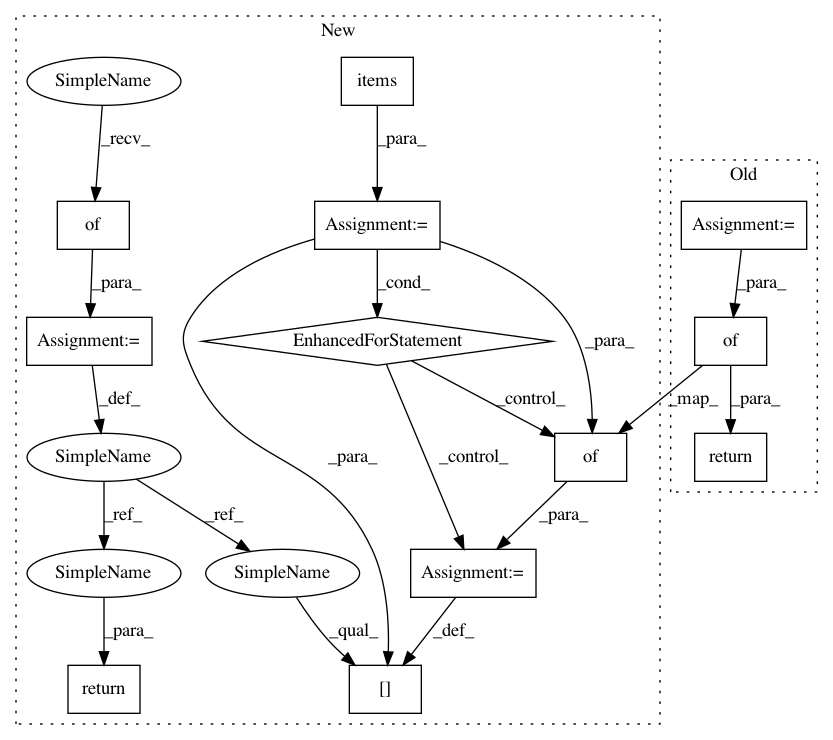

4d2bf12cc06f40bbff6b675422cfd9e333b5bcd9,moabb/contexts/evaluations.py,CrossSubjectEvaluation,evaluate,#CrossSubjectEvaluation#Any#Any#Any#Any#,51
Before Change
t_start = time()
score = self.score(clf, allX, ally, groups, paradigm.scoring)
duration = time() - t_start
return {"time": duration,
"dataset": dataset.code,
"id": subject,
"score": score,
"n_samples": groups.sum(),
"n_channels": allX.shape[1]}
def preprocess_data(self, dataset, paradigm):
assert len(dataset.subject_list) > 1, "Dataset {} has only one subject".format(
dataset.code)
After Change
groups = np.concatenate(self.ind_cache)
// re-generate s group label
self.ind_cache[s] = np.ones(self.ind_cache[s].shape)
out = {}
for name, clf in pipelines.items():
t_start = time()
score = self.score(clf, allX, ally, groups, paradigm.scoring)
duration = time() - t_start
out[name]= {"time": duration,
"dataset": dataset.code,
"id": subject,
"score": score,
"n_samples": groups.sum(),
"n_channels": allX.shape[1]}
return out
def preprocess_data(self, dataset, paradigm):
assert len(dataset.subject_list) > 1, "Dataset {} has only one subject".format(
dataset.code)
In pattern: SUPERPATTERN
Frequency: 3
Non-data size: 12
Instances
Project Name: NeuroTechX/moabb
Commit Name: 4d2bf12cc06f40bbff6b675422cfd9e333b5bcd9
Time: 2018-02-19
Author: vjayaram@danube.is.localnet
File Name: moabb/contexts/evaluations.py
Class Name: CrossSubjectEvaluation
Method Name: evaluate
Project Name: pyannote/pyannote-audio
Commit Name: b5bf0a3059d2d60b74266ef0c7ed6eb8134acee9
Time: 2019-05-27
Author: bredin@limsi.fr
File Name: pyannote/audio/labeling/tasks/speech_activity_detection.py
Class Name: SpeechActivityDetectionGenerator
Method Name: specifications
Project Name: NeuroTechX/moabb
Commit Name: 4d2bf12cc06f40bbff6b675422cfd9e333b5bcd9
Time: 2018-02-19
Author: vjayaram@danube.is.localnet
File Name: moabb/contexts/evaluations.py
Class Name: CrossSessionEvaluation
Method Name: evaluate